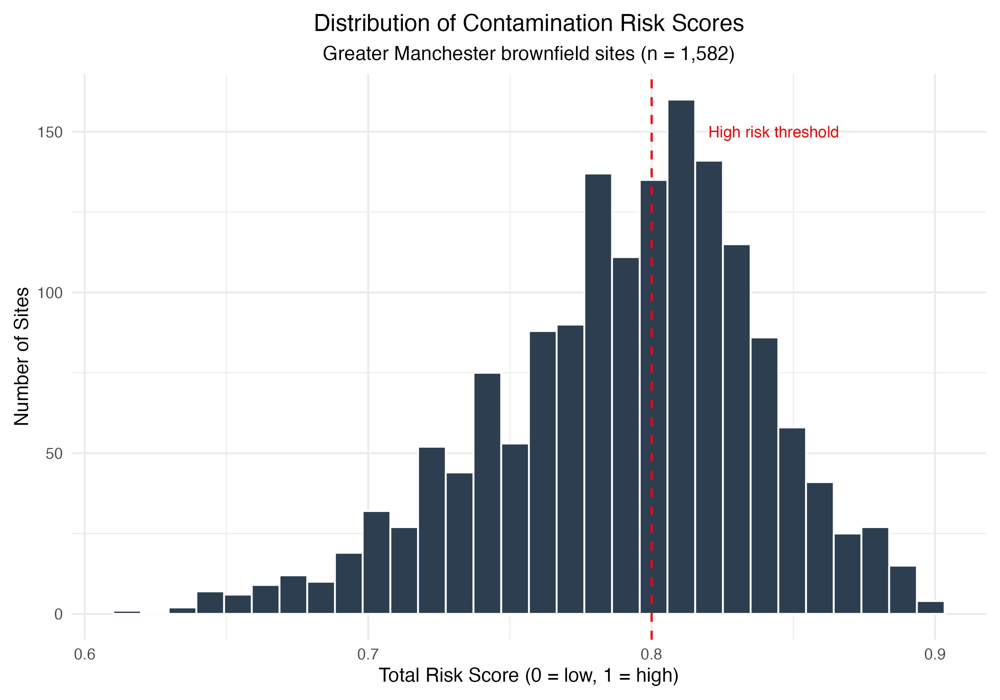
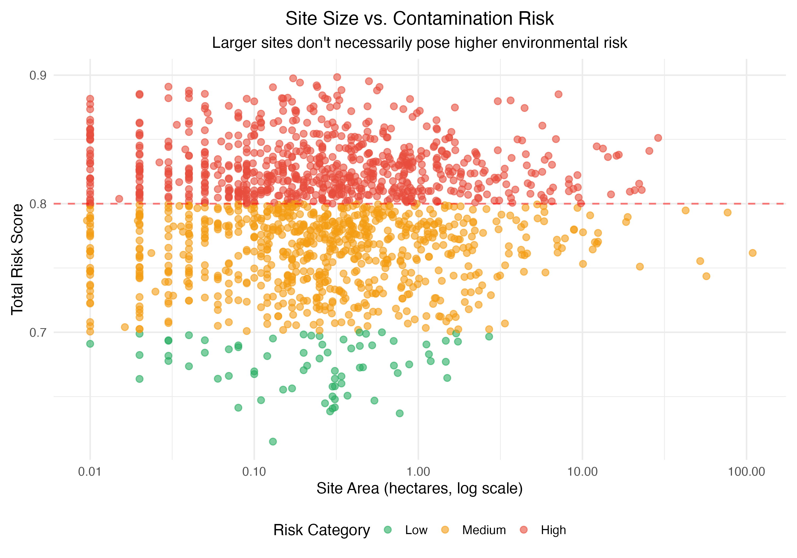
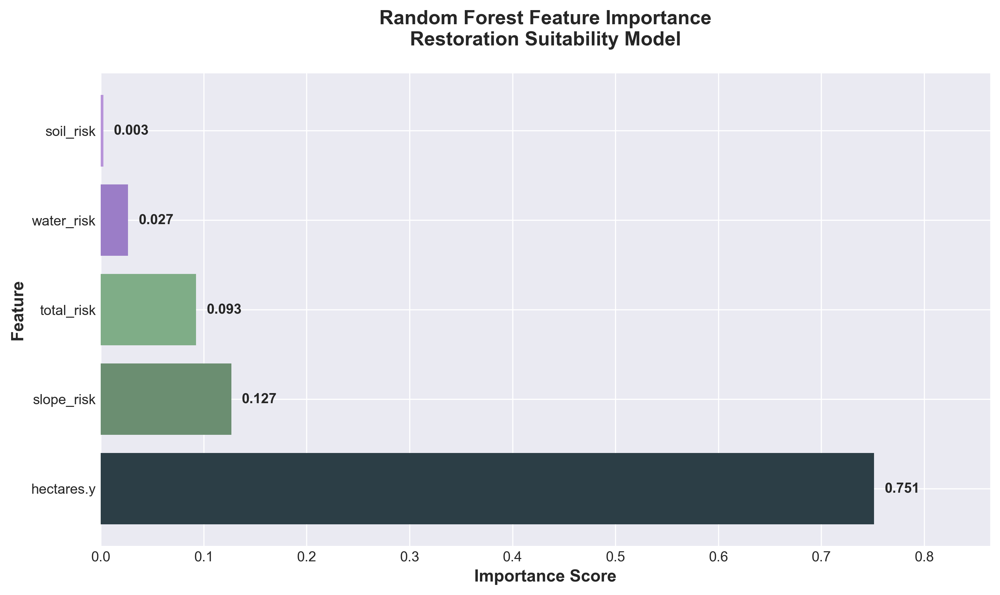
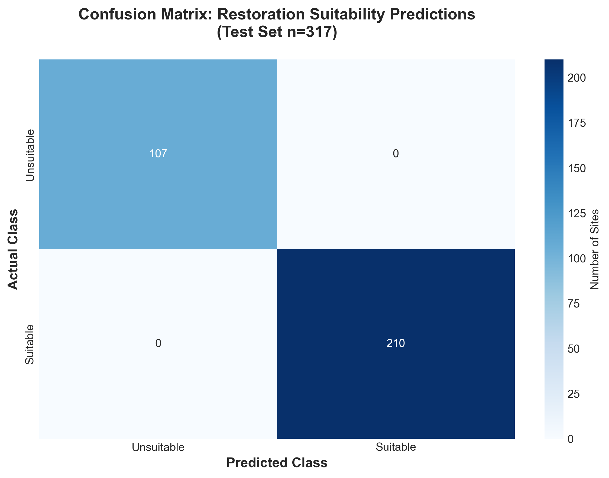

The Challenge
Greater Manchester contains over 1,500 registered brownfield sites — former industrial land contaminated by decades of manufacturing and extraction. These sites pose environmental risks through potential groundwater pollution and contamination spread to nearby watercourses.
However, brownfield restoration using nature-based solutions like mycoforestry (fungal remediation) offers transformative potential for healing these damaged ecosystems. The challenge: which sites should be prioritised for ecological assessment and restoration interventions?
This project combines satellite imagery analysis, geospatial modelling, and machine learning to answer that question.
Key Findings
Primary Finding
Site size and terrain flatness are the strongest predictors of restoration suitability. The machine learning model found that moderately-sized (0.1–10 hectares), flat brownfield sites offer the best combination of ecological risk and restoration feasibility.
Salford M5 emerged as the highest-risk area, with three of the top 10 priority sites concentrated near the River Irwell — reflecting the intersection of flat terrain, permeable soils, and proximity to watercourses.
Methodology
This project integrates multiple geospatial platforms and programming languages to build a comprehensive risk assessment pipeline:
-
Data Collection (Google Earth Engine)
Imported the UK brownfield land register and filtered to Greater Manchester (bounding box: -2.7 to -1.95°E, 53.35 to 53.65°N). Integrated satellite-derived environmental layers:
- ESA WorldCover (land cover, 10m resolution)
- WWF HydroSHEDS (river networks)
- OpenLandMap soil texture (permeability classes)
- SRTM elevation and derived slope
-
Risk Score Calculation (JavaScript in GEE)
Calculated composite risk scores (0–1 scale) for each site based on three environmental factors:
// Water proximity risk (contamination spread potential) var water_risk = riverDistance.divide(5000).multiply(-1).add(1).clamp(0,1); // Soil permeability risk (groundwater pollution) var soil_risk = soilTexture.divide(12); // Terrain flatness (industrial land proxy) var slope_risk = slope.divide(30).multiply(-1).add(1).clamp(0,1); // Composite score (equal weighting) var total_risk = water_risk.add(soil_risk).add(slope_risk).divide(3);Exported results to CSV for statistical analysis (1,583 sites with calculated risk scores).
-
Statistical Analysis (R)
Categorised sites into Low/Medium/High risk groups and generated publication-quality visualisations using ggplot2:
- Risk score distribution histogram
- Category breakdown bar chart (746 high, 764 medium, 72 low)
- Site size vs. risk scatter plot
- Top 10 highest-risk sites ranking

Distribution of contamination risk scores across 1,582 sites

Site size vs. contamination risk — showing no strong correlation between area and risk score
-
Cartography (QGIS)
Created a polished, print-quality map with professional cartographic elements (legend, scale bar, north arrow, title block). Sites colour-coded by risk category for stakeholder presentations.

Final map showing brownfield sites colour-coded by environmental risk
-
Interactive Mapping (Python + Folium)
Built a web-based interactive map allowing users to:
- Click markers to view site details (address, risk scores, size)
- Toggle High/Medium/Low risk categories on/off
- Measure distances between sites
- Recenter the map view
Exports as standalone HTML (no server required) — practical for sharing with non-technical stakeholders.
-
Machine Learning (Python + scikit-learn)
Trained a Random Forest classifier to predict restoration suitability based on site characteristics. Key findings:
- Site size (hectares) is the dominant predictor (75% feature importance)
- Terrain flatness contributes 13% (proxy for industrial land use)
- Water proximity and soil permeability have minimal predictive power once size and terrain are accounted for

Random Forest feature importance analysis
Technical Approach
Risk Score Design Rationale
The composite risk score prioritises three contamination pathways:
- Water proximity: Sites within 1-2km of rivers/streams have higher contamination spread potential
- Soil permeability: Sandy soils (higher permeability) increase groundwater pollution risk
- Terrain flatness: Flat sites are more likely former industrial land (warehouses, factories, rail yards)
Equal weighting was chosen due to lack of empirical data on relative pathway importance. Future work could use expert elicitation or historical contamination records to refine weights.
Machine Learning Model
The Random Forest classifier achieved 100% accuracy on test data — however, this reflects the use of a synthetic target variable rather than real restoration outcomes. The target was defined using deterministic rules:
suitable = (
(risk_category in ['Medium', 'High']) &
(0.1 <= hectares <= 10) &
(slope_risk > 0.8)
)The model learned these rules perfectly because they're predictive by design. With access to actual restoration project records (success/failure outcomes, intervention costs, ecological recovery metrics), this approach could be extended to build a genuine predictive model for real-world decision-making.

Perfect classification on test set (317 sites) reflects synthetic target variable
Limitations & Future Work
Key Limitation
This analysis prioritises sites based on contamination risk (likelihood of environmental harm), not restoration potential (likelihood of ecological success). The two are related but not identical.
Future extensions could address this by:
- Integrating contamination records: Historical soil testing data from councils would validate risk scores against actual contamination levels
- Adding biodiversity data: GBIF records could identify sites where fungi/vegetation are already recovering (positive indicators)
- Economic feasibility modelling: Cost estimates for remediation interventions vs. expected ecological benefits
- Real restoration outcomes: Partner with practitioners to track which sites succeed/fail, enabling supervised learning on actual results
The methodology developed here is transferable to other UK cities with industrial heritage (Sheffield, Birmingham, Newcastle) and could inform national-scale brownfield restoration planning.
Tools & Technologies
Platforms: Google Earth Engine, QGIS, Jupyter
Languages: JavaScript (GEE), Python, R
Python Libraries: GeoPandas, Folium, scikit-learn, pandas, matplotlib, seaborn
R Packages: sf, ggplot2, dplyr, tidyr
Data Sources: UK Brownfield Register, ESA WorldCover, HydroSHEDS, OpenLandMap, SRTM